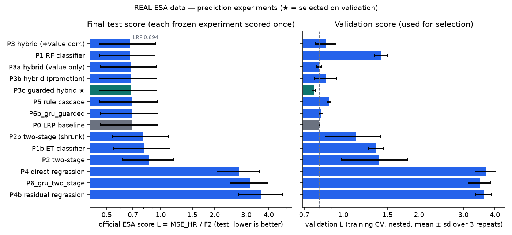
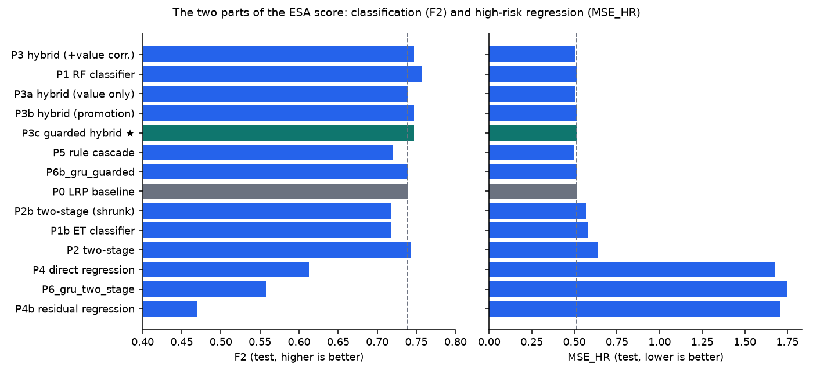
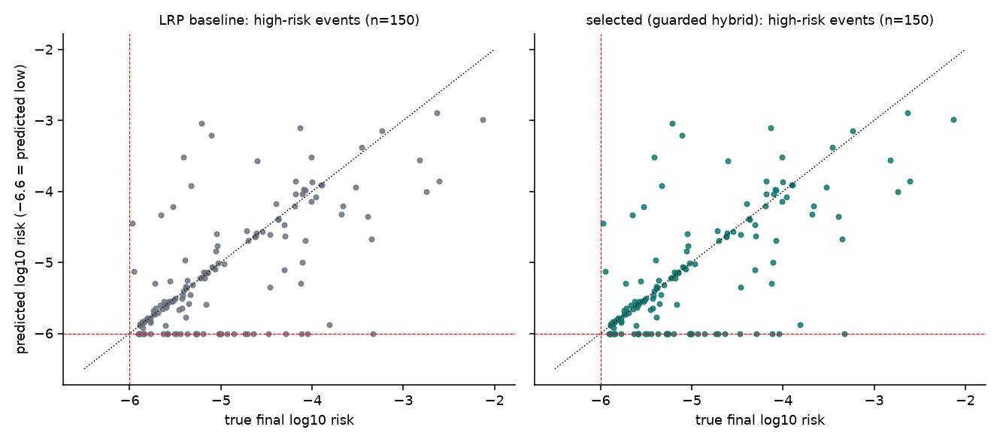
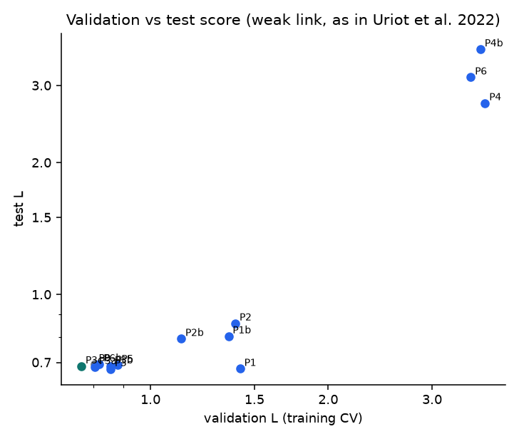
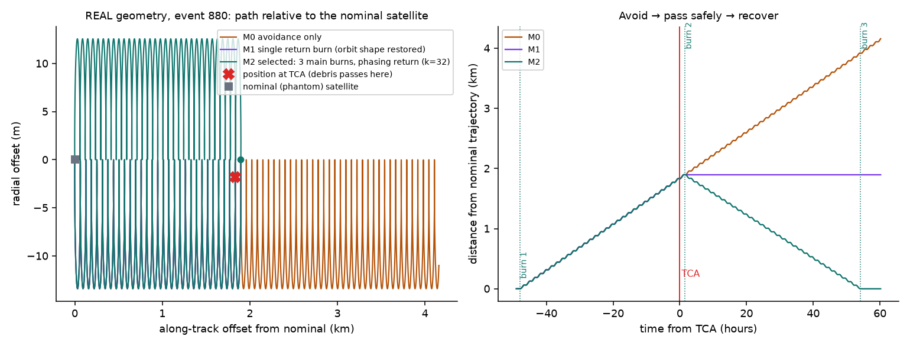
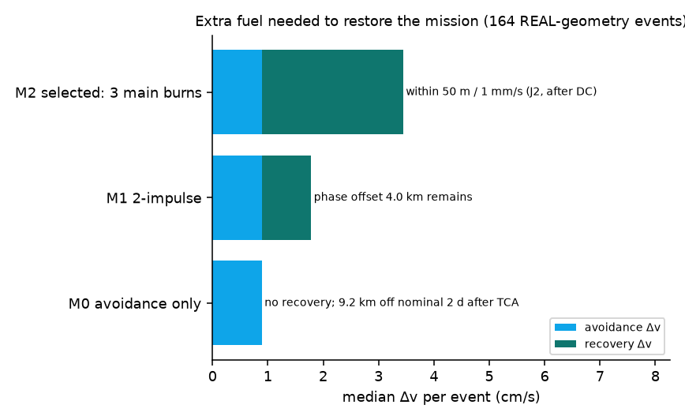
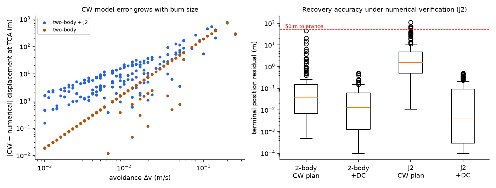
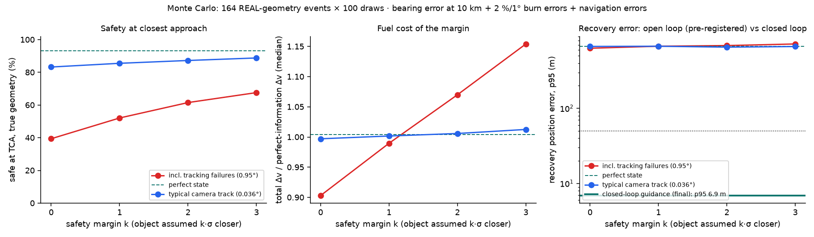
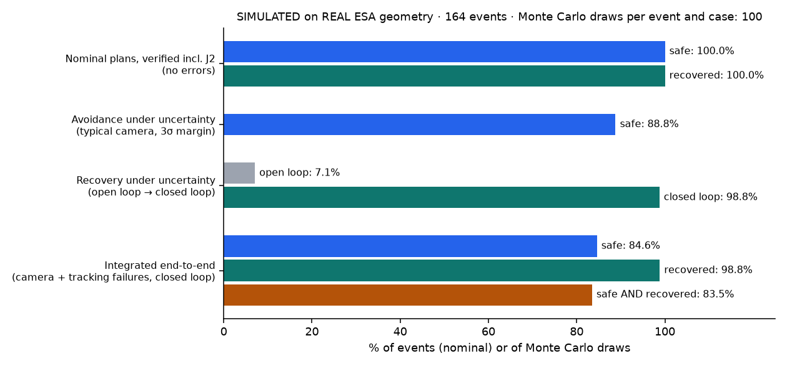

An integrated collision-avoidance decision prototype
A research prototype that combines real ESA conjunction-risk data with simulated onboard visual tracking and fuel-efficient avoidance-and-recovery manoeuvre planning. It predicts which close approach deserves attention, observes the threat, avoids it, and then brings the satellite back to its mission trajectory.
PREDICT→OBSERVE→AVOID→RECOVER
Research prototype, not flight software. REAL ESA CDM data · SIMULATED camera images, manoeuvres and recovery.
Mission control replayT−0.0 hTime-compressed mission replayMONITORING
ESA risk data REAL
reported risk, one dot per CDMlast risk available at decision timemodel output: alert (grey = no alert, < −6)final ESA risk (ground truth, shown at the end)high-risk threshold log10 Pc = −6decision point: 2 days before TCA
Time to TCA
—
CDMs received
—
Latest reported risk (log10 Pc)
—
ML alert probability
—
Predicted final risk
—
Observation trigger
—
Orbit scene SIMULATED on REAL geometry
nominal / reference orbitour spacecraftthreat (debris) orbitdebris / objectTCA point
The manoeuvre moves the spacecraft by metres to kilometres, which is far too small to see at Earth scale (Earth radius 6,371 km). The Distance from nominal view shows the detailed deviation.
nominal / reference trajectory (distance 0)selected trajectory: avoidance, then recoveryavoidance only (no recovery)single return burn (phase offset remains)burn 1 (avoid)recovery burns and small trimsTCA (debris passes)our spacecraft now
Encounter plane at TCA: our spacecraft at the centre; the 1 km circle is the safety distance; the ellipses show the position uncertainty; the two points show where the debris passes without and with the manoeuvre.
Onboard RGB camera SIMULATED
YOLO confidence
—
Track
—
Bearing (az, el)
—
Angular rate
—
Frame
—
Range
not measured (one camera)
Every value shown comes from saved results: real ESA CDMs, frozen model outputs, and precomputed manoeuvre, Monte Carlo and camera files. The browser only animates between them. The camera sequence is an illustrative synthetic approach from the tracking experiment, and its measured bearing error is what drives the manoeuvre uncertainty.
Thousands of close approaches between satellites and debris are forecast every week. Operators receive Conjunction Data Messages (CDMs), but the final risk is often clear only close to the time of closest approach (TCA). A manoeuvre must be prepared days earlier. Every manoeuvre also costs fuel and pushes the satellite off the orbit its mission needs. A useful decision-support system should therefore answer four questions: which events need attention, where the threat is, how to avoid it cheaply, and how to return to the mission orbit afterwards.
How it works
1 · Predict REAL
From the ESA CDM history available 2 days before TCA, the latest reported risk is kept as a strong baseline. A small ExtraTrees model may add an alert for borderline events (a guarded hybrid).
2 · Observe SIM
An alert points a simulated onboard RGB camera at the threat. A fine-tuned YOLO detector finds the object, and a Kalman tracker measures its bearing and angular rate. One camera gives direction, not reliable range.
3 · Avoid SIM
1,830 candidate burns are tested on the real encounter geometry. The cheapest burn with miss distance ≥ 1 km and Pc ≤ 10⁻⁶ is chosen and then checked with a numerical orbit integration that includes J2.
4 · Recover SIM
After the debris passes, two more main burns bring the satellite back to the position it would have had without the manoeuvre (a phasing return), within 50 m and 1 mm/s. Under realistic errors, small closed-loop correction burns keep the return on target.
The manoeuvre architecture follows published avoid-and-return designs (three main impulses: one avoidance plus two return burns). The prediction families tested are also published. The contribution of this project is the integration and the honest evaluation of these components as one end-to-end chain, including how measured perception error and burn-execution error affect both safety and recovery.
What is real and what is simulated
Part
Status
Details
Conjunction risk data (CDMs)
REAL
ESA Kelvins Collision Avoidance Challenge dataset (CC BY 4.0): training events and official test events.
Risk prediction and scores
REAL
Models trained and tuned on the training file only, then frozen and scored once on the official test set.
Encounter geometry and covariance
REAL
Miss vector, relative velocity, uncertainties and orbit taken from the latest CDM available 2 days before TCA.
Camera images, YOLO detections, tracking
SIMULATED
Synthetic pinhole-camera images. ESA provides no imagery. Detector and tracker outputs are real outputs of our models on those synthetic images.
Manoeuvres, closest-approach outcome, recovery
SIMULATED
Clohessy–Wiltshire planning, verified with numerical two-body and J2 integration. No real satellite was manoeuvred.
Uncertainty
SIMULATED
Monte Carlo with the bearing error measured in our tracking experiment, plus burn-execution and navigation errors.
Results
Collision-risk prediction REAL
Official ESA score, latest-risk baseline (test)
reproduces the published 0.694 · lower is better
Selected model: guarded hybrid (test)
better than the baseline; not statistically significant
F2 (selected vs baseline)
baseline
Test events changed by the ML guard
truly high-risk · false alarms
The selected method is the Latest Risk baseline plus an ExtraTrees-based guarded alert: it never lowers or removes a baseline alert; it can only add an alert for a borderline event. It is not a new continuous-risk predictor: continuous-risk models were tested but not selected. We tested frozen experiments: the latest-risk baseline, classifiers, a two-stage classifier → regressor, guarded hybrids, direct risk regression, a re-tuned threshold-rule cascade, and a temporal GRU network trained on a GPU. Each was developed with event-level cross-validation on the training file only. Its settings were then frozen and it was scored once on the official test set. The model was chosen on validation, not on test.
Honest result: the latest reported risk is very hard to beat, as in the original ESA competition. The selected guarded hybrid gives a small improvement (95% interval of the change in score: to ). Two-stage, direct-regression and GRU models were worse than the baseline on validation and on test.
Comparison with published results (official ESA test set; lower L is better)
Siamese LSTM flags low-risk events that become high-risk
0.585
0.753
0.441
closest idea to ours
DunderMifflin / KP Labs (7th)
Tulczyjew et al. 2021
two-stage: classifier, then high-risk regressor
0.628
0.718
0.451
re-tested under our protocol: worse than the baseline
ESA organisers' LightGBM (post-competition)
Uriot et al. 2022
residual regression on the latest risk
0.684
n/r
n/r
our result is close to this
This project: guarded hybrid
2026
Latest Risk + ExtraTrees guarded alert; chosen on validation
slightly better than the baseline, behind the top entries
The challenge was held in 2019; the years above are publication years. During the challenge, teams could see scores on part of the test set; our method was selected on training-file validation only. Our result is not state of the art.

Official score on test (left) and validation (right). ★ = selected on validation.

The two parts of the ESA score.Precision–recall on the official test set.Real CDM histories: one event correctly rescued by the ML guard, and one false alarm it added.

Predicted vs true final risk for the 150 high-risk test events.

Validation and test scores agree only weakly, as reported by the competition organisers.
Avoidance + recovery manoeuvre SIMULATED on REAL geometry
Nominal, numerically verified plans (one plan per event, no errors). The 100% figures below apply only to these nominal plans; results under realistic errors follow in the next section.
Events planned (alerts that needed a manoeuvre)
all feasible
Nominal plans safe at closest approach (verified incl. J2)
after numerical verification; CW-only plans:
Nominal plans returned within 50 m / 1 mm/s
max position error
Median Δv: avoid + recover
avoidance + recovery
Main manoeuvre result: restoring the mission trajectory costs more fuel than avoiding the debris. Coming back within about after TCA needs a median of times the avoidance Δv. With avoidance only (no recovery), the satellite would be off its nominal position 2 days after TCA. A single return burn restores the orbit shape but leaves a median phase offset. The recovery duration of orbits is the selected duration within the tested window (1–32 orbits), not a proven optimum.

Real geometry of event 880: avoid → pass safely → recover.

Extra fuel needed to restore the mission trajectory.Faster return costs more fuel. Burning at whole orbits (phasing) is much cheaper than a generic 2-point transfer.Closest approach with and without the manoeuvre (event 880).

Fast analytical planning vs accurate numerical integration, and recovery accuracy.Δv per event.
Avoidance under uncertainty: what if the camera is not perfect? SIMULATED
The Monte Carlo covers events × draws per setting. Camera bearing error comes from our tracking experiment (typical ; including the tracking failure , at 10 km range). Every burn has 2% magnitude and 1° pointing error, and recovery burns use our own navigation (1 m, 0.5 mm/s). A safety margin of k·σ assumes the object is closer than estimated.

Safety margin vs safe rate, Δv and recovery error.
Recovery under uncertainty: burn and navigation errors SIMULATED
With 2% / 1° burn errors, the pre-registered open-loop return (burns 2 and 3 only) met the 50 m / 1 mm/s tolerance in only of draws, because a tiny error drifts for about two days. A separately reported experiment added closed-loop guidance: orbit determination from a history of GNSS fixes, 3 small mid-course drift corrections and a final trim, on top of the 3 main burns. This is the final recovery design; its success rate belongs to the 3 main burns plus these corrections, not to three burns alone.
Open loop (pre-registered)
median error
Closed loop (final design)
median error · Δv +
Navigation velocity error was the limiting factor. Orbit determination plus small trims restores the tolerance.
Final integrated end-to-end test SIMULATED on REAL geometry
One Monte Carlo draw passes the whole chain: camera bearing error (tracking failures at their measured rate) → avoidance plan with a 3σ margin → burn executed with error → safety checked on the true ESA geometry → closed-loop recovery (3 main burns + small corrections, every burn with error, orbit-determination navigation). Success = safe at TCA AND back within 50 m / 1 mm/s in the same draw.
Safe at TCA AND recovered
95% CI –
Safe at TCA
typical camera only:
Recovered within tolerance
closed-loop recovery
Draws
events × draws per case
Four levels of evidence
Level
What is tested
Result
Nominal, numerically verified
one plan per event, no errors, verified incl. J2
safe · recovered
Avoidance under uncertainty
camera + execution errors, 3σ margin
typical camera · tracking failure in every draw
Recovery under uncertainty
execution + navigation errors
open loop → closed loop
Integrated end-to-end
all of the above in the same draw
safe AND recovered

From nominal plans (no errors) to the integrated end-to-end test with all errors in the same draw.
Limitations
Prediction: only 66 high-risk training events. The improvement over the baseline is small and not statistically significant, and validation and test agree only weakly.
Camera: images are synthetic, so there is a sim-to-real gap. One camera measures direction, not reliable range; range from apparent size is exploratory only. The visual sequence is slower and closer than a real 12 km/s encounter.
Dynamics: planning uses Clohessy–Wiltshire (circular orbit). Verification includes J2 but not drag or solar pressure. Pc is computed with a 2D short-encounter approximation.
Thresholds: the 1 km / 10⁻⁶ safety rule and the 50 m / 1 mm/s recovery tolerance are experimental design values, not agency requirements.
Monte Carlo: propagates with the analytical Clohessy–Wiltshire model (it is not a J2 simulation); J2 was verified for the nominal plans. The safety margin covers perception error only, so cheapest plans can still fail under burn execution error (a margin for execution error is future work).
Tracking failure is the weakest link: when the tracker locks onto a false detection, the avoidance plan is built on a wrong direction. A real system needs automatic track-quality checks.
No real satellite was manoeuvred, and this is not flight software.
Future operational system
Possible users are satellite operators, space-traffic-management research and onboard-autonomy research. Next steps would be: tests on real space imagery, angles-only range estimation with deliberate observer manoeuvres, a higher-fidelity force model (drag, solar pressure), robust planning that uses the full uncertainty distribution, and evaluation with operator feedback. The system is an early research prototype; no technology-readiness level is claimed.